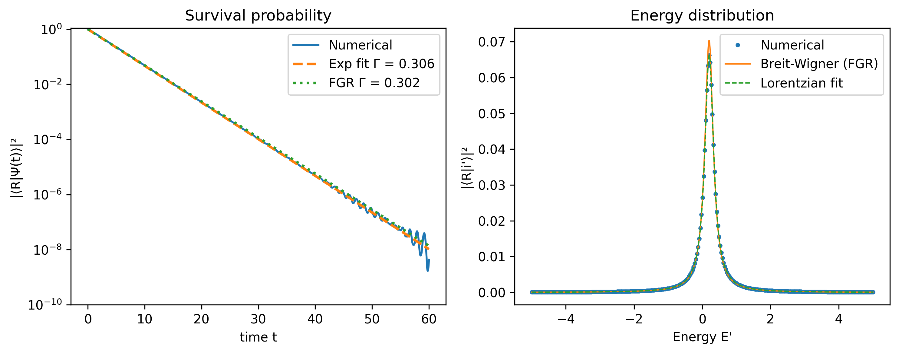
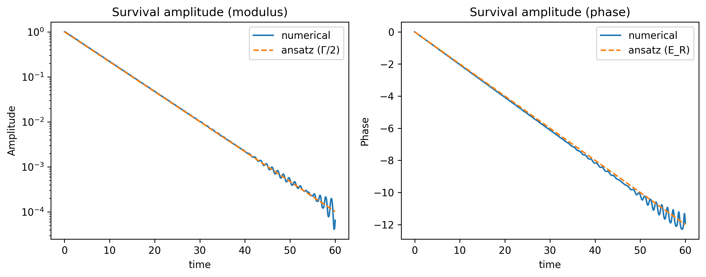

Toy model of decay
Consider an unperturbed Hamiltonian: $$ H_0 = \begin{bmatrix} E_R & 0 & 0 & 0 \\ 0 & E_1 & 0 & 0 \\ 0 & 0 & E_2 & 0 \\ 0 & 0 & 0 & \dots \end{bmatrix} $$ $\ket{R}$ is the state of our resonance, and $\ket{1}, \ket{2}, \dots$ are the states that our resonance can decay to. Since $\ket{R}$ is an eigenstate of the unperturbed Hamiltonian $H_0$, it will be stable. Now we turn on a perturbation that couples $\ket{R}$ to the decay states. This perturbation has the special property that it only couples between $\ket{R}$ and $\ket{i}$ where $i = 1, 2, \dots$, and not between two decay states $\ket{i}$ and $\ket{j}$, so the perturbed Hamiltonian has the special form: $$ H = \begin{bmatrix} E_R & V & V & V \\ V & E_1 & 0 & 0 \\ V & 0 & E_2 & 0 \\ V & 0 & 0 & \dots \end{bmatrix} $$ where $V$ is the coupling strength of the decay. Here we assume that $V$ is constant, but in general it may depend on $i$.
After perturbation, $\ket{R}$ is no longer an eigenstate of the Hamiltonian, so it begins to evolve with time. Let the eigenstates of the perturbed Hamiltonian be $\ket{R'}$, $\ket{i'}$. Then, the time evolution of $\ket{R}$ is given by: $$\ket{\psi (t)} = \braket{R'|R} e^{-\tfrac{iE_{R'}t}{\hbar}}\ket{R'} + \braket{1'|R} e^{-\tfrac{iE_{1'}t}{\hbar}}\ket{1'} + \dots$$ The survival amplitude of the initial resonance at some future time $t$ is: $$\psi_R(t) = \braket{R|\psi(t)}$$ and the probability of the system to decay into the state $\ket{i}$ is: $$\text{pr}(R \rightarrow i)(t) = |\braket{i|\psi(t)}|^2$$ which do depend on time.
Note also that the energy distribution is defined in terms of the projection of the initial state $\ket{R}$ onto the perturbed eigenstates $\ket{R'}, \ket{1'}, \ket{2'}, \dots$. That is, when talking about the "probability" distribution of the energy of the state, we work in the basis of the "perturbed" eigenstates, since these are energy eigenstates of the time evolution Hamiltonian $H$. The reason we work with $\braket{i'|\psi(t)}$ instead of $\braket{i|\psi(t)}$ is because the (magnitude of the) former coefficients are independent of time, while the latter are not. If we were to perform a Fourier analysis on the evolution of $\psi(t)$, the coefficients that we get are the magnitudes of $\braket{i'|\psi(t)}$, since each $\braket{i'|\psi(t)}$ is attached to a well defined complex phase.
The above model is nice because we can study it numerically. Let's start by picking some values for the matrix.
Let $E_R = 0.2$, and $V = 0.04$. Let us also use a total of $300$ continuum states, so $i = 1, 2, \dots, 300$. Finally, we set the energies of the continuum states to be spaced uniformly between $-5.0$ and $5.0$.
import numpy as np
from scipy.linalg import eigh
import matplotlib.pyplot as plt
# parameters
n_cont = 300 # number of continuum states
E_R = 0.2 # resonance energy
V = 0.04 # coupling strength
hbar = 1.0
width_cont = 10.0 # continuum spans [-width_cont/2, +width_cont/2]
# construct the hamiltonian
E_cont = np.linspace(-width_cont/2, width_cont/2, n_cont)
dim = n_cont + 1
H = np.zeros((dim, dim))
H[0, 0] = E_R
H[1:, 1:] = np.diag(E_cont)
H[0, 1:] = V
H[1:, 0] = V
# diagonalisation
evals, evecs = eigh(H)
# initial resonance state in the computational basis
R_vec = np.zeros(dim)
R_vec[0] = 1.0
# energy coefficients
c = evecs.T @ R_vec
# time evolution
t_max = 100.0
n_t = 2000
times = np.linspace(0.0, t_max, n_t)
a_t = np.zeros(n_t, dtype=complex)
for i, t in enumerate(times):
phases = np.exp(-1j * evals * t / hbar)
a_t[i] = np.sum(np.abs(c)**2 * phases)
surv_prob = np.abs(a_t)**2An interesting comparison can be made between an empirical fit of the data with the prediction of Fermi's Golden rule, which predicts that the decay rate is given by: $$\Gamma_{\text{FGR}} = 2\pi V^2 \rho(E_R) \approx 2\pi V^2 \times \frac{\text{no. of continuum states}}{\text{width of continuum energies}}$$ Here are the plots:

A common way to derive the Breit Wigner resonance is to write down the following ansatz: $$\psi_R(t) \propto e^{-\frac{i E_R t}{\hbar}} e^{-\frac{\Gamma t}{2\hbar}}$$ Here's how it compares to our numerical simulation:

So the ansatz seems to hold up pretty well!
Let us now put everything together in a logical order. In deriving the Breit Wigner distribution we usually start with the ansatz: $$\psi_R(t) \propto e^{-\frac{i E_R t}{\hbar}} e^{-\frac{\Gamma t}{2\hbar}}$$ This is shown by our simulation to be a good approximation. We then proceed to take the Fourier transform of this amplitude with respect to time. What is the corresponding analogy in our discrete model? Recall that: $$\ket{\psi (t)} = \braket{R'|R} e^{-\tfrac{iE_{R'}t}{\hbar}}\ket{R'} + \braket{1'|R} e^{-\tfrac{iE_{1'}t}{\hbar}}\ket{1'} + \dots$$ Therefore: $$ \begin{align} \psi_R(t) &= \braket{R|\psi (t)} \\ &= \bra{R}\left(\braket{R'|R} e^{-\tfrac{iE_{R'}t}{\hbar}}\ket{R'} + \braket{1'|R} e^{-\tfrac{iE_{1'}t}{\hbar}}\ket{1'} + \dots \right) \\ &= |\braket{R'|R}|^2 e^{-\tfrac{iE_{R'}t}{\hbar}} + |\braket{1'|R}|^2 e^{-\tfrac{iE_{1'}t}{\hbar}} + \dots \end{align} $$ So in the discrete case instead of having a continuum of energies we have a set of energies, and performing a Fourier decomposition produces the coefficients $|\braket{i'|R}|^2$ which are precisely the probabilities of associated with the corresponding energies.
In the continuous case, the Fourier transform of $\psi_R(t)$ is: $$\tilde{\psi}_R(E) = \mathcal{F}(\psi_R(t))[E] \propto \frac{1}{\tfrac{E-E_R}{\hbar} + \frac{i\Gamma}{2\hbar}}$$ And the energy probability density is: $$|\tilde{\psi}_R(E)|^2 \propto \frac{1}{(E-E_R)^2 + \Gamma^2/4}$$ Note that there is a subtle difference between the discrete and continuous case. In the discrete case, a Fourier decomposition already produces real coefficients which are the probabilities associated with the different energies. In the continuous case, the Fourier transform $\tilde{\psi}_R(E)$ is in general complex and we need to square it again to get the energy probability distribution. This seems rather peculiar to me.